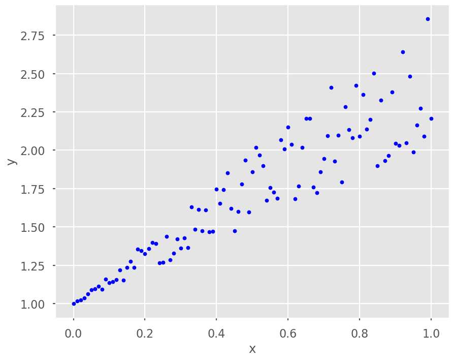

Programe el algoritmo para encontrar los polinomios interpolador para n puntos usando diferencias divididas de Newton
Sea los siguientes puntos
\(x_i\)
0.10000
0.30000&
0.50000
\(y_i\)
-1.377000
0.061000
1.875000
Encuentre el polinomio que interpola estos puntos usando un sistema de ecuaciones
Encuentre el polinomio interpolador usando polinomios de Lagrange
Encuentre la solución usando diferencias divididas de Newton
Sea los siguientes puntos
\(x_i\)
0.10000
0.30000
0.50000
0.70000
\(y_i\)
-1.380000
-0.020000
1.500000
3.180000
Encuentre la solución usando diferencias divididas de Newton
¿Por qué en este caso \(a_3=0\)? Justifique su respuesta
Sea los siguientes puntos
\(x_i\)
0.01
-0.01
0.1
-0.1
1
-1
\(y_i\)
-0.50637
0.50637
-0.54402
0.54402
0.84147
-0.84147
Encuentre el polinomio que interpola estos puntos usando un sistema de ecuaciones generado por una matriz
Encuentre la solución usando diferencias divididas de Newton
Grafique el polinomio obtenido en cada uno de los puntos anteriores
Compare esa gráfica con \(f(x)=1/\sin(x)\)
Sea \(f(x)=\sin(x)\), si queremos interpolar esta función en el intervalo \([0,\pi]\) para los puntos \(x_i=0, \frac{1}{4}\pi, \frac{1}{2}\pi,\frac{3}{4}\pi\) y \(\pi\). Encuentre el error del polinomio en ese intervalo. ¿Considera que ese polinomio es una buena aproximación de la función \(f(x)\)?. Justifique su respuesta.
Describa que el fenómeno Runge. De un ejemplo del método Runge.
Consulte el siguiente comando la librería. Úselo para interpolar el punto 4 y compare sus respuestas. ¿Cómo obtendría el valor de \(f(0.2)\)?
Observe los siguientes puntos
import numpy as npimport matplotlib.pyplot as pltplt.style.use('seaborn-poster')# generate x and yx = np.linspace(0, 1, 101)y =1+ x + x * np.random.random(len(x))# plot the resultsplt.figure(figsize = (10,8))plt.plot(x, y, 'b.')plt.xlabel('x')plt.ylabel('y')plt.show()

Note que es tienen un comportamiento lineal, Encuentre una recta que minimice el error cuadrático de los puntos dados. Para ello el método de cuadrados mínimos. Encuentre la magnitud del error.
\[||y-\hat{y}||_2\] donde \(y\) es el vector de los puntos dados y \(\hat{y}\) es el vector de los puntos estimados.
Observe los siguientes puntos
import numpy as npimport matplotlib.pyplot as pltplt.style.use('seaborn-poster')# let's generate x and y, and add some noise into yx = np.linspace(0, 10, 101)y =0.1*np.exp(0.3*x) +0.1*np.random.random(len(x))# Let's have a look of the dataplt.figure(figsize = (10,8))plt.plot(x, y, 'b.')plt.xlabel('x')plt.ylabel('y')plt.show()
Note que tiene un comportamiento de la forma
\[y=ae^{bx}\]
este sistema lo podemos linealizar tomando logaritmos
\[\ln(y)=\ln(a)+bx\]
Encuentre una recta que minimice el error cuadrático de los puntos dados. Para ello el método de cuadrados mínimos y grafique su respuesta en el mismo gráfico de los puntos dados. Encuentre la magnitud del error.
\[||y-\hat{y}||_2\] donde \(y\) es el vector de los puntos dados y \(\hat{y}\) es el vector de los puntos estimados.
Ejemplo con datos reales.
Vamos a usar los datos de pingüinos, los cuales se encuentran pre-cargados en la librería searbosn y que nos permiten analizar la relación entre la longitud del pico y la masa corporal de los pingüinos. En la librearía seaborn podemos encontrar información de tres tipos de especies y en donde podemos analizar las siguientes variables: * bill_length_mm: longitud del pico en milímetros * bill_depth_mm: profunidad del pico en milímetros * flipper_length_mm: longitud de las alas en milímetros * body_mass_g: masa corporal en gramos * species: especie de pingüino
import numpy as npfrom scipy.stats import norm import pandas as pd import seaborn as snsimport matplotlib.pyplot as plt%matplotlib inlineplt.rcParams['figure.figsize'] = (20, 10)plt.style.use('ggplot')import warningswarnings.filterwarnings('ignore')
df = sns.load_dataset("penguins")type(df) # note que df es un objeto de tipo DataFrame de pandas# para visualizar el encabezado del DataFramedf.head()
species
island
bill_length_mm
bill_depth_mm
flipper_length_mm
body_mass_g
sex
0
Adelie
Torgersen
39.1
18.7
181.0
3750.0
Male
1
Adelie
Torgersen
39.5
17.4
186.0
3800.0
Female
2
Adelie
Torgersen
40.3
18.0
195.0
3250.0
Female
3
Adelie
Torgersen
NaN
NaN
NaN
NaN
NaN
4
Adelie
Torgersen
36.7
19.3
193.0
3450.0
Female
# para visualizar el tamaño del DataFrameprint('Total de elementos ',df.size)# para visualizar el número de filas y columnas del DataFrameprint('Número de filas y columnas',df.shape)
Total de elementos 2408
Número de filas y columnas (344, 7)
para visualizar los datos estadísticos básicos del DataFrame
df.describe()
# aqui primero debemos mirar si hay datos faltantesprint(df.isnull()) # esto nos devuelve un DataFrame de booleanos# aqui imprime si el dato es faltante o noprint(df.isnull().sum()) # esto nos devuelve la suma de los valores faltantes por columna
# para manipular la base de datos debemos hacer una copiadf1 = df.copy()
#vamos a buscar los datos faltantes en la columna "body_mass_g"print(df1['body_mass_g'].isnull().sum()) # esto nos devuelve la suma de los valores faltantes por columna
2
#vamos a ver la fila de los datos faltantes en la columna "body_mass_g"print(df1[df1['body_mass_g'].isnull()])
species island bill_length_mm bill_depth_mm flipper_length_mm \
3 Adelie Torgersen NaN NaN NaN
339 Gentoo Biscoe NaN NaN NaN
body_mass_g sex
3 NaN NaN
339 NaN NaN
Necesitamos buscar alguna estrategia para estudiar los datos, por ejemplo, podemos rellenarlos con el promedio, o podemos omitir esos datos, o podemos usar la regresión lineal para estimar los valores faltantes (Note que para buscar una estrategia siempre es dependiente al problema). Para este caso vamos a omitir los datos faltantes.
# eliminar la fila con los datos faltantesdf1.dropna(subset=['body_mass_g'], inplace=True)print(df1.isnull().sum()) # esto nos devuelve la suma de los valores faltantes por columnaprint(df1.shape) # para visualizar el número de filas y columnas del DataFrame
species 0
island 0
bill_length_mm 0
bill_depth_mm 0
flipper_length_mm 0
body_mass_g 0
sex 9
dtype: int64
(342, 7)
Vamos a estudiar la relación entre la longitud del pico y la masa corporal de los pingüinos. Para ello vamos a ver si existe una relación lineal entre estas dos variables. Una forma básica de estudiar dicha relación es hacer un primer gráfico de dispersión de los datos.
by=df1["body_mass_g"] # extraemos la columna body_mass_gbl=df1["bill_length_mm"] # extraemos la columna bill_length_mm
plt.scatter(by, bl)plt.xlabel("body mass grams")plt.ylabel("bill length mm")plt.title("Relationship between body mass and bill length")plt.show()
Encuentre una recta que minimice el error cuadrático de los puntos dados. Para ello el método de cuadrados mínimos y grafique su respuesta en el mismo gráfico de los puntos dados. Encuentre la magnitud del error.
\[||y-\hat{y}||_2\] donde \(y\) es el vector de los puntos dados y \(\hat{y}\) es el vector de los puntos estimados.
Estudie la librería numpy para resolver el problema anterior. Compare sus resultados.